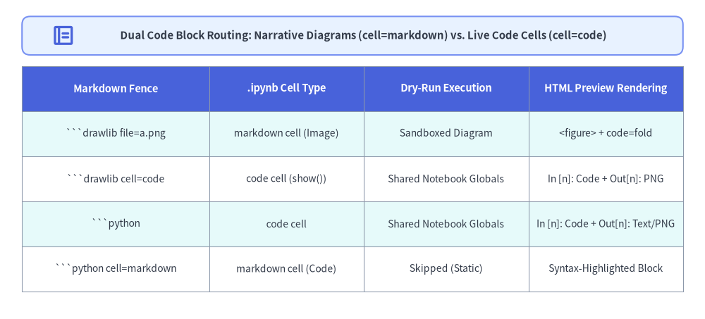

Jupyter・Colab ノートブックプロジェクトガイド (drawlib init project jupyter)
jupyter スターターテンプレートは、Drawlib に 「コードとしての図解付き Jupyter Notebook & Google Colab（Illustrated Notebook as Code）」 をもたらします。Git diff が肥大化しやすい巨大な .ipynb JSON ファイルを直接手編集する代わりに、解説テキスト・アーキテクチャ図解（```drawlib）・対話型 Python 演習セル（```python または ```drawlib cell=code）をクリーンな Markdown（jupyter_src/<lang>/**/*.md）で記述し、単一の drawlib.toml と インプロセス AI Dry-Run エンジンによる自動実行検証を経て、単体 .ipynb ノートブック（drawlib build jupyter -> jupyter_jupyter/）・.ipynb 同梱の 2 カラム HTML プレビューサイト（drawlib build html -> jupyter_html/）・抽出図解画像（drawlib build image -> jupyter_images/） の 3 ターゲットへ出力します。

Source Code
from drawlib.canvas import save, setup
from drawlib.icons import phosphor
from drawlib.lines import line
from drawlib.shapes import rectangle
from drawlib.styles import Styles
from drawlib.text import text
setup(width=128, height=62)
# Left: Markdown Notebook Source
rectangle((20.5, 31), width=33, height=52, style=Styles.Neutral.patch(shape_r=2.0))
phosphor.file_code((10.0, 49.0), width=4.4, style=Styles.PrimaryBold)
text((23.0, 49.0), "jupyter_src/<lang>/", style=Styles.DarkBold.patch(text_size=10.5))
text(
(20.5, 36.2),
"01_tutorial.md\n• Narrative + # H1 / ## H2\n• ```drawlib (diagram)\n• ```python (code cell)",
style=Styles.Dark.patch(text_size=10.0),
)
rectangle(
(20.5, 13.5),
width=28.5,
height=8.2,
style=Styles.PrimaryNeutral.patch(shape_r=1.2),
text="styles.py & drawlib.toml",
text_style=Styles.DarkBold.patch(text_size=10.0),
)
# Middle: In-Process AI Dry-Run Engine
line((37.0, 31), (43.5, 31), arrow_head="->", style=Styles.DarkBold)
rectangle((61.0, 31), width=35, height=52, style=Styles.PrimaryFlat.patch(shape_r=2.0))
phosphor.play_circle((49.0, 49.0), width=4.6, style=Styles.WhiteBold)
text((63.5, 49.0), "AI Dry-Run Engine", style=Styles.WhiteBold.patch(text_size=10.6))
text(
(61.0, 33.8),
"Sequential shared globals\n• Executes code cells\n• Captures stdout & expr\n• Captures show() / save()\n• Fails on Geometry Warn",
style=Styles.White.patch(text_size=10.0),
)
rectangle(
(61.0, 13.5),
width=29.5,
height=7.8,
style=Styles.White.patch(shape_r=1.2),
text="--dry-run Verification",
text_style=Styles.PrimaryBold.patch(text_size=10.0),
)
# Right: 3 Dedicated Build Targets
line((78.5, 31), (82.5, 31), style=Styles.DarkBold)
line((82.5, 13.0), (82.5, 49.0), style=Styles.DarkBold)
for ty in (49.0, 31.0, 13.0):
line((82.5, ty), (87.0, ty), arrow_head="->", style=Styles.DarkBold)
rectangle((105.5, 49.0), width=37, height=15.0, style=Styles.PrimaryNeutral.patch(shape_r=1.6))
phosphor.notebook((95.0, 52.2), width=3.8, style=Styles.PrimaryBold)
text((108.5, 52.2), "build jupyter", style=Styles.DarkBold.patch(text_size=10.2))
text((105.5, 45.2), "jupyter_jupyter/<lang>/*.ipynb\n.ipynb only (Drive + Colab)", style=Styles.Dark.patch(text_size=9.5))
rectangle((105.5, 31.0), width=37, height=15.0, style=Styles.SecondaryNeutral.patch(shape_r=1.6))
phosphor.globe((95.0, 34.2), width=3.8, style=Styles.PrimaryBold)
text((108.5, 34.2), "build html", style=Styles.DarkBold.patch(text_size=10.2))
text((105.5, 27.2), "jupyter_html/<lang>/*.html\nIn[n]/Out[n] + bundled .ipynb", style=Styles.Dark.patch(text_size=9.5))
rectangle((105.5, 13.0), width=37, height=15.0, style=Styles.Neutral.patch(shape_r=1.6))
phosphor.images((95.0, 16.2), width=3.8, style=Styles.PrimaryBold)
text((108.5, 16.2), "build image", style=Styles.DarkBold.patch(text_size=10.2))
text((105.5, 9.2), "jupyter_images/<stem>/*.png\nExtracted diagram assets", style=Styles.Dark.patch(text_size=9.5))
save()
1. なぜ Jupyter / Colab ノートブックを Markdown で記述するのか？
チュートリアル・データ分析ガイド・ハンズオン教材を生の .ipynb JSON ファイルのまま管理すると、開発チームや AI コーディングエージェントにとって多くの課題が生じます。
生の .ipynb 管理における課題 |
Drawlib jupyter プロジェクトによる解決策 |
|---|---|
| Git Diff の肥大化: Base64 画像データや実行カウンタの差分で PR レビューが困難になる。 | クリーンな Markdown ソース (jupyter_src/<lang>/*.md): プレーンテキストの Markdown と ```drawlib / ```python ブロックで記述し、.ipynb と HTML は決定論的なビルド成果物として生成。 |
| セルの実行順序バグと古い出力: 手動でセルを順不同に実行したままコミットすると、最初から実行した際にエラーになる。 | インプロセス AI Dry-Run (execute = true / --dry-run): ビルド時に各ノートブックを先頭セルから順番に共有 globals 名前空間で自動実行し、例外や [Geometry Warning] があれば即座に検出。 |
Web ドキュメントとノートブックの二重管理: ブラウザ閲覧用の記事と Colab 用の .ipynb を別々に保守する手間が発生する。 |
単一 drawlib.toml からのマルチターゲット出力: Google Drive / Colab 配布向けの単体 .ipynb（drawlib build jupyter -> jupyter_jupyter/）、.ipynb 同梱の 2 カラム HTML プレビュー（drawlib build html -> jupyter_html/）、抽出図解 PNG（drawlib build image -> jupyter_images/）を自在に出し分け可能。 |
多言語化の煩雑さ: 日英などの複数言語で .ipynb ファイルを個別に同期・保守するのが難しい。 |
ネイティブ [i18n] 対応 (-l en,ja): 統一された <src_dir>/<lang>/ 構造により、言語スイッチャー付き HTML とロケール別 .ipynb を一括生成。 |
ライブショーケース & クローズド共有ガイド:
type = "jupyter"で構築された全 6 章の日英バイリンガル対話型ハンズオン教材をhttps://www.drawlib.com/jupyter/で実際に体験できます。公開 GitHub リポジトリを使えない顧客共有・社内チーム配布向けに.ipynbのみを Google Drive へ同期し Google Colab で実行したい場合は、Google Drive + Colab 共有ガイド (rclone) を参照してください。
2. スキャフォールディングとディレクトリ構造
drawlib init project jupyter コマンドで単一言語または多言語の jupyter プロジェクトを初期化します。
# デフォルトの英語 jupyter プロジェクトを作成 (jupyter_src/en/ を生成):
uv run drawlib init project jupyter
# カスタムターゲット名 + 日英バイリンガル (en,ja) + Google テーマで作成:
uv run drawlib init project jupyter tutorials -l en,ja -s google
# 高速 AI Dry-Run 検証 (全セルを順次実行し [Geometry Warning] を検査、ファイル出力なし):
uv run drawlib build jupyter jupyter_src/ --dry-run
# 全ターゲットを一括ビルド (jupyter_html/, jupyter_jupyter/, jupyter_images/):
./jupyter_src/build.sh
# 用途別に個別ビルド:
./jupyter_src/build_jupyter.sh # -> jupyter_jupyter/<lang>/*.ipynb (単体 .ipynb のみ)
./jupyter_src/build_html.sh # -> jupyter_html/ (2カラム HTML プレビュー + 同梱 .ipynb)
./jupyter_src/build_image.sh # -> jupyter_images/ (抽出図解 PNG)
# 出力された HTML とバンドル済み .ipynb のリンク・アセット整合性をヘッドレス検証:
uv run drawlib serve jupyter_html/ --check
生成されるソースディレクトリ構造:
jupyter_src/
├── drawlib.toml # [必須] プロジェクトマニフェスト (type = "jupyter", [i18n], [jupyter], 任意で [seo])
├── styles.py # プロジェクト共通の Style / Color 定義 (ノートブック globals に自動プリロード)
├── utils.py # ノートブック間で再利用する Python ヘルパー関数群
├── style.css # 2カラム HTML プレビュー用スタイルシート (In[n]/Out[n] セル表示対応)
├── template.html # Open in Colab & .ipynb ダウンロードバー付き Jinja2 レイアウト
├── _assets/ # 静的画像・ロゴ・favicon.png (HTML 出力先の _assets/ に自動コピー)
├── en/ # ロケール別ノートブックソース (01_, 02_, ... の自然順でソート)
│ ├── 01_sample_notebook.md # ノートブック 1: Markdown 解説 + drawlib 図解 + python コードセル
│ └── README.md # 執筆ガイド (ノートブックのコンパイル対象からは自動除外)
├── build.sh # マスタービルドスクリプト (build_html.sh, build_jupyter.sh, build_image.sh を実行)
├── build_html.sh # 2カラム HTML プレビュー + 同梱 .ipynb のビルド -> jupyter_html/
├── build_jupyter.sh # 単体 .ipynb ノートブックのみのビルド -> jupyter_jupyter/
├── build_image.sh # 埋め込み図解画像の抽出 -> jupyter_images/
└── serve.sh # ローカル HTTP プレビューサーバー (drawlib serve jupyter_html/)
同一の drawlib.toml から、用途別にクリーンな出力ディレクトリを生成できます。
jupyter_jupyter/ # `drawlib build jupyter` — .ipynb のみ出力 (Google Drive + Colab 共有に最適)
└── en/
└── 01_sample_notebook.ipynb
jupyter_html/ # `drawlib build html` — 独自ドメインや任意のホスティングへ配置可能な統合バンドル
├── index.html # ルートエントリページ (default_lang の最初のノートブックから自動リベース)
├── en/
│ ├── index.html
│ ├── 01_sample_notebook.html # "⬇ Download .ipynb" と "Open in Colab" を備えた 2カラム HTML
│ └── 01_sample_notebook.ipynb # 同一フォルダにバンドルされた実行可能 .ipynb (HTML から相対リンク)
├── images/ # ロケール間で共有される図解画像アセット
└── _assets/ # 静的アセットおよび favicon
jupyter_images/ # `drawlib build image` — 抽出された図解画像
└── 01_sample_notebook/
├── pipeline_overview.png
└── live_bar_chart.png
3. デュアルコードブロック構文 (cell=markdown vs. cell=code)
jupyter_src/<lang>/**/*.md 内の通常の Markdown 散文や見出し（# H1、## H2、表、リスト）は .ipynb の markdown セルに変換され、フェンス付きコードブロックは言語識別子（drawlib vs. python）および任意の cell= 属性に応じてルーティングされます。
.md ソース内のフェンス構文 |
コンパイル後の .ipynb セル種別 |
HTML プレビューサイトの出力 | 主な用途 |
|---|---|---|---|
```drawlib file=arch.png caption="..."(デフォルト cell=markdown) |
自己完結型の <img src="data:image/...;base64,..." /> を含む markdown セル |
折りたたみソース（code=fold）付きの <figure> 図解 |
解説テキストに添えるアーキテクチャ図・フロー図・シーケンス図・概念図。 |
```drawlib cell=code file=exercise.png(または [jupyter].drawlib_cell_mode = "code") |
save(...) が show() に自動変換された未実行状態（outputs: []）の code セル |
ノートブック形式の In [n]: コードセル + Out[n]: 描画画像 |
読者が Jupyter / Colab 上で座標やスタイルを書き換えて実行するハンズオン演習。 |
```python(デフォルト cell=code) |
対話実行向けにクリーンな未実行状態（outputs: []）で出力される code セル |
ノートブック形式の In [n]: コードセル + Out[n]: 実行結果 |
データの前処理、セル間の変数共有、または setup(..., cwd=True) と show() を用いた直接描画。 |
```python cell=markdown |
シンタックスハイライトされた静的 Python コードを含む markdown セル |
通常の静的コードブロック（実行されない） | 実行を伴わない擬似コードや設定スニペットの提示。 |

Source Code
from drawlib.canvas import save, setup
from drawlib.icons import phosphor
from drawlib.shapes import rectangle
from drawlib.smartarts import Table
from drawlib.styles import Colors, Styles
from drawlib.text import text
setup(width=128, height=58)
rectangle((64, 51.5), width=120, height=7.0, style=Styles.PrimaryNeutral.patch(shape_r=1.5))
phosphor.notebook((11.5, 51.5), width=4.4, style=Styles.PrimaryBold)
text(
(66.0, 51.5),
"Dual Code Block Routing: Narrative Diagrams (cell=markdown) vs. Live Code Cells (cell=code)",
style=Styles.DarkBold.patch(text_size=10.8),
)
tbl = Table(
cell_style=Styles.White,
text_style=Styles.Dark.patch(text_size=10.0),
header_cell_style=Styles.PrimaryFlat,
header_text_style=Styles.WhiteBold.patch(text_size=10.5),
border_style=Styles.MutedThin,
has_header=True,
)
tbl.set_style_cell_evenodd(
even_color=Colors.White,
even_text_style=Styles.Dark.patch(text_size=10.0),
odd_color=Styles.SecondaryNeutral.shape_fill_color or Colors.White,
odd_text_style=Styles.Dark.patch(text_size=10.0),
)
tbl.set_style_cell_header(
background_color=Styles.PrimaryFlat.shape_fill_color or Colors.Primary,
text_style=Styles.WhiteBold.patch(text_size=10.5),
)
tbl.draw_flexible(
xy=(4, 46.0),
column_widths=[34.0, 28.0, 30.0, 28.0],
row_heights=[8.2, 8.2, 8.2, 8.2, 8.2],
data=[
["Markdown Fence", ".ipynb Cell Type", "Dry-Run Execution", "HTML Preview Rendering"],
["```drawlib file=a.png", "markdown cell (Image)", "Sandboxed Diagram", "<figure> + code=fold"],
["```drawlib cell=code", "code cell (show())", "Shared Notebook Globals", "In [n]: Code + Out[n]: PNG"],
["```python", "code cell", "Shared Notebook Globals", "In [n]: Code + Out[n]: Text/PNG"],
["```python cell=markdown", "markdown cell (Code)", "Skipped (Static)", "Syntax-Highlighted Block"],
],
)
save()
Markdown ノートブックの記述例 (01_quickstart.md):
# 第1章: Google Colab で始める Drawlib クイックスタート
解説用のアーキテクチャ図解と、読者がその場で編集・実行できる Python コードセルを組み合わせて記述します。
```drawlib align=center code=fold file=ch01_concept_arch.png caption="解説用アーキテクチャ図解（Markdown セルとして出力）"
from drawlib.canvas import save, setup
from drawlib.shapes import rectangle
from drawlib.styles import Styles
setup(width=100, height=32)
rectangle((50, 16), width=76, height=18, style=Styles.PrimaryNeutral, text="Narrative Architecture Figure")
save()
```
```python
!pip install -q drawlib
```
## 1. 実行可能な Python セル間での状態共有
前の `python` セルで定義した変数や関数は、後続のセルでもそのまま参照できます。
```python
# 共有レイアウト定数を定義
CANVAS_W, CANVAS_H = 100, 36
nodes = ["Ingest", "Transform", "Serve"]
print(f"Configured {len(nodes)} pipeline stages on {CANVAS_W}x{CANVAS_H} canvas")
```
```python
# setup(..., cwd=True) と show() でインライン描画
from drawlib.canvas import setup, show
from drawlib.shapes import rectangle
from drawlib.styles import Styles
setup(width=CANVAS_W, height=CANVAS_H, cwd=True)
for idx, label in enumerate(nodes):
cx = 20 + idx * 30
st = Styles.PrimaryFlat if idx == 2 else Styles.Neutral
tst = Styles.WhiteBold if idx == 2 else Styles.DarkBold
rectangle((cx, 18), width=22, height=14, style=st, text=label, text_style=tst)
show()
```
4. [jupyter] マニフェスト設定と Google Colab 連携 (drawlib.toml)
jupyter_src/drawlib.toml の [jupyter] セクションで、デフォルトのセル種別・Dry-Run 実行検証・Open in Colab リンクを設定できます。
[project]
name = "jupyter"
type = "jupyter"
title = "Drawlib Interactive Notebooks"
description = "Interactive Jupyter & Google Colab Hands-on Tutorials"
style = "google"
[i18n]
default_lang = "en"
langs = ["en", "ja"]
[jupyter]
# ベース URL プレフィックス (末尾に /<lang>/<stem>.ipynb を自動付与) または {path} テンプレート:
colab_base_url = "https://colab.research.google.com/github/owner/repo/blob/main/jupyter_jupyter"
drawlib_cell_mode = "markdown" # ```drawlib のデフォルト: "markdown" | "code"
execute = true # ビルド時に全コードセルを順次 Dry-Run 実行し HTML プレビューに Out[n] を出力
# [seo]
# site_url = "https://example.com/jupyter" # 任意: HTML プレビューの canonical / OGP / sitemap 用ベース URL
100% 単一ファイル自己完結の
.ipynb出力 & ページごとの明示的な!pip install:
- 画像参照切れゼロ:
cell=markdownの```drawlib図解・地の文のローカル Markdown 画像（や<img src="...">）・公式Open in Colabバッジのすべてが、HTML の<img src="data:..." />タグによる Base64 Data URI として自動インライン化されます。Google Colab・VS Code Jupyter・JupyterLab・オフライン環境のいずれでも.ipynb単体で確実に画像が表示され、HTML プレビューサイト側は通常の画像ファイル（images/）で高速配信されます。- ページ単位の明示的なパッケージ導入: 必要なライブラリはノートブックごとに異なるため、各
.mdファイル冒頭の```pythonコードブロック内に!pip install -q drawlib ...（または%pip install ...）を直接記述します。シェル・マジック行は.ipynbと HTML にそのまま出力されつつ、インプロセス AI Dry-Run 実行時には自動的にスキップされます。
4.1. [jupyter] 設定キー一覧
| キー | 型 | デフォルト | 動作 |
|---|---|---|---|
colab_base_url |
str |
"" |
.ipynb ノートブックおよび HTML プレビューページに挿入される Open in Colab ボタンのベース URL または {path} URL テンプレート:
|
drawlib_cell_mode |
"markdown" | "code" |
"markdown" |
コードフェンスで cell= 属性を省略した際の ```drawlib ブロックのデフォルトセル種別。 |
execute |
bool |
true |
true の場合、ビルド時にすべての code セルをインプロセスで順次実行検証し、stdout・最終式の評価結果・show() / save() の描画画像を HTML プレビュー（Out [n]）に出力します（.ipynb 側のコードセル出力はハンズオン向けに空の未実行状態に保たれます）。 |
4.2. タイトルおよび左サイドバーブランド名の解決ルール (drawlib.toml vs. # H1)
コンパイルされた HTML プレビューサイト（jupyter_html/）では、以下のようにタイトルが解決されます。
- 左サイドバーのブランドヘッダー (
site_title):drawlib.tomlの[project].title→ 任意の<lang>/navbar.mdの先頭# H1→"Notebooks"の優先順で決定されます。 - ブラウザタブの
<title>: 各ノートブックの先頭# H1見出しとsite_titleを組み合わせた<Notebook H1> — <site_title>になります。 - 左サイドバーのナビゲーションツリー: 各
.mdファイルの# H1（ノートブック名）と## H2（章内のセクションリンク）から自動抽出され、/キーによる即時フィルタリングにも対応するため、navbar.mdの手動メンテナンスは不要です。
5. ノートブック内での決定論的な相対パス解決 (setup(..., cwd=True))
通常の .py スクリプトでは、setup(width=..., height=...) はデフォルトで cwd=False となり、相対パス（save("chart.png")、image("logo.png")、Dimage("photo.png")）は実行中の Python スクリプトが存在するディレクトリ基準で解決されます。
一方、対話型の JupyterLab や Google Colab のコードセルはディスク上の .py ファイルではなく一時カーネルフレーム内で実行されます。ノートブックのコードセル内では setup() に cwd=True を渡すことで、コールスタック推測に頼らずカレントワーキングディレクトリ（os.getcwd()）基準で 100% 決定論的に相対パスを解決できます。
from drawlib.canvas import save, setup, show
from drawlib.shapes import rectangle
from drawlib.styles import Styles
# save(), image(), Dimage() のすべての相対パスを os.getcwd() 基準で決定論的に解決:
setup(width=100, height=40, cwd=True)
rectangle((50, 20), width=70, height=22, style=Styles.PrimaryNeutral, text="Interactive Notebook Cell")
show() # Jupyter / Colab 上でインライン表示され、drawlib build jupyter でも自動キャプチャされる
setup(..., cwd=True)が有効な場合:save("out.png")は<os.getcwd()>/out.pngに書き出されます（引数なしのsave()は<os.getcwd()>/output.png）。image("data/pic.png")およびDimage("data/pic.png")は<os.getcwd()>/data/pic.pngを読み込みます。
clear()を呼び出すと、cwdはデフォルトのFalseにリセットされます。
6. CLI ビルドターゲットとインプロセス AI Dry-Run 検証
配信用途に応じて drawlib build jupyter・drawlib build html・drawlib build image を使い分けます。
# 1. 高速インプロセス AI Dry-Run (全セルを実行し [Geometry Warning] を検査、ファイル書き出しなし):
uv run drawlib build jupyter jupyter_src/ --dry-run
# 2. 単体 .ipynb ノートブックのみ出力 -> jupyter_jupyter/<lang>/*.ipynb (Google Drive + Colab 共有向け):
uv run drawlib build jupyter jupyter_src/ -o jupyter_jupyter/
# 3. 2カラム HTML プレビュー + 同梱 .ipynb -> jupyter_html/ (Web サイト公開・ローカル確認向け):
uv run drawlib build html jupyter_src/ -o jupyter_html/
# 4. 埋め込み図解 PNG のみ抽出 -> jupyter_images/:
uv run drawlib build image jupyter_src/ -o jupyter_images/
| オプション | 短縮形 | デフォルト | 説明 |
|---|---|---|---|
--output |
-o |
<base>_jupyter/ |
出力先ディレクトリパス（単一ファイル指定時は .ipynb ファイルパス）。 |
--format |
-f |
png |
埋め込み drawlib ブロックの画像出力フォーマット（png または webp）。 |
--styles / --utils |
-s / -u |
自動解決 | styles.py および utils.py のパス（ノートブック実行環境の globals にプリロードされる）。 |
--execute / --no-execute |
None ([jupyter].execute) |
code セルをインプロセスで順次実行し、エラーゼロと [Geometry Warning] ゼロを検証する（.ipynb 側のコードセル出力は空に保たれる）。 |
|
--dry-run |
False |
出力ファイルを書き出さずに全セルの実行と [Geometry Warning] の検証のみを行う。 |
|
--no-cache |
False |
.drawlib/cache.db をバイパスしてすべての図解ブロックを再描画する。 |
|
--workers |
-w |
auto |
並列ワーカープロセス数（auto は 1 <= (CPU コア数 - 1) <= 8）。 |
インプロセス AI Dry-Run エンジンが自動検証する項目:
- セル間の状態共有 (
globals): セル 1 で定義した変数・関数・インポートがセル 2、セル 3 へと引き継がれ、実際の Jupyter / Colab カーネルと同じ動作を再現します（styles.pyとutils.pyもノートブックの名前空間にプリロードされます）。 - 未処理例外ゼロの保証:
SyntaxError、NameError、TypeError、または Drawlib のバリデーションエラーが発生するとビルドを即座に中断し、該当ノートブックのパス・セル番号（In [n]）・トレースバックを報告します。 [Geometry Warning]ゼロの保証:cell=markdownの図解描画時およびcell=codeの実行時にキャンバスのクリッピングやはみ出し警告（[Geometry Warning]）が発生した場合、NotebookExecutionErrorとして即座に検出します。- HTML 専用出力レンダリング（
.ipynbはクリーンな未実行状態）: 標準出力（print(...)）、セル末尾の式の評価値（text/plain）、およびshow()/save()の描画結果（image/png）は HTML プレビューページ（In [n]/Out[n]）にのみ出力され、.ipynb側のコードセルは未実行状態（outputs: [],execution_count: null）に保たれるため、ブラウザ上での即時確認と Google Colab 上での快適なハンズオン実行を両立できます。